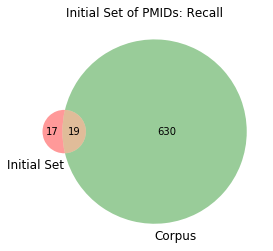

PuRSSE (PubMed Research Search String Extraction) Demo
Step 1
Enter a list of known PMIDs
or a PubMed search query string:
Thanks!
You entered
36 known PMIDsThanks!
This search generated
36 known PMIDs Export list
Step 2
Enter all PMIDs from your corpus:
OR
Thanks!
You entered
649 PMIDs
Search string generated from your PMIDs:
gout[mh]+OR+(chondrocalcinosis[majr]+AND+diagnosis,+differential[mh]))+AND+english[la]+AND+humans[mh]+AND+(jsubsetk[text]+OR+review[pt]+OR+guideline[pt]+OR+clinical+trial[pt]+OR+patient+education+handout[pt]+OR+jsubsetn[text]+OR+jsubsetaim[text]+OR+systematic[sb])+NOT+(letter[pt]+OR+editorial[pt])+AND+%22last+1+Year%22[edat] Copy
Recall for your known PMIDs
in this corpus: 52.78%

Optimal search string for your PMIDs:
gout[mh]+OR+AND+english[la]+AND+humans[mh]+AND+jsubsetk[text]+OR+review[pt]+OR+guideline[pt]+OR+clinical+trial[pt]+OR+patient+education+handout[pt]+OR+jsubsetn[text]+OR+jsubsetaim[text]+OR+systematic[sb])+NOT+(letter[pt]+OR+editorial[pt])+AND+%22last+1+Year%22[edat] Copy
Recall for your known PMIDs in this corpus: 100.00%